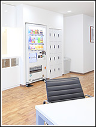
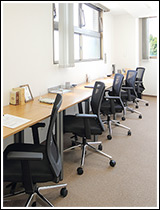
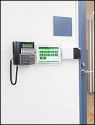
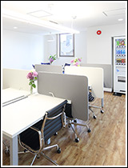
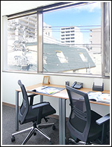
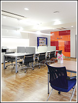

オープンオフィスとは？｜個室のレンタルオフィスならOpenoffice：東京・大阪をはじめ全国に50拠点以上
- 【個室レンタルオフィス】オープンオフィス HOME
- 成功する起業家の条件：創業資金の有効活用｜オープンオフィスとは？
オープンオフィスとは？
- ■成功する起業家の条件：創業資金の有効活用
- ■起業時の【軍資金】がいかに大切か
- ■オープンオフィスの『保証金制度』
- ■オープンオフィスの『無人運営』とは？
- ■一坪オフィス実験
- ■立地・デザインについて
- ■共益費って？
- ■何も買う必要がない！
- ■オープンオフィスで過ごす「あなたの一日」
成功する起業家の条件：創業資金の有効活用
「オープンオフィス」は「これまでのオフィス賃貸」業界に対する挑戦でした。
既存のシステムに逆らわなければ、私たちが目指す「起業家に適したオフィス」は出来なかったのです。
だから、多くの障害がありました。
当初は、私たち自身がオフィスを貸してもらえなかったのです。
そんな状態から始めましたが、何とか多くの起業家であるお客様に支えられ、どんどん改良して多くの方に支持して頂くサービスになりました。
そんな中で、たくさんの起業に接する機会に恵まれました。
1000社以上の起業家のお手伝いをしていると思いますが、その経験から思うことは
「成功するにはワケがある」 ということです。
成功する起業家は成功するべくして成功し、失敗する起業家は失敗するべくして失敗しているということです。
この中でも大切なことは、創業資金を有効に使うということです。
起業（事業）というのは、お金さえ続けば潰れません。
「オープンオフィス」の良い所は、なんと言ってもまず、【大切な資金を有効に使える】ところにあります。
少々荒っぽく言うと、【ムダ金を使わず】に済みます。
通常の賃貸オフィスでは考えられない「初期費用の低さ」で事業をスタートさせることが出来ます。
さらに、フルカラーコピー、フルカラープリンター、インターネット回線などが標準で装備されていますので、それらを購入する必要もありません。
ですから、通常の賃貸オフィスを選択するより、ずっとずっと低い費用でオフィスを構え事業を始めることが出来るのです。
【リスクを最小限】にする事が出来るのです。
ちょっとしたオフィスを借りたら、初期費用だけで大切な資金はなくなります。
オフィスを借りただけなのに…（「初期費用と軍資金」）これで良いのでしょうか？
本来、最も重要な「売上を上げて事業を安定させる」為に使う資金が、全くなくなってしまうのです。
それで事業が成功するワケがありません。





